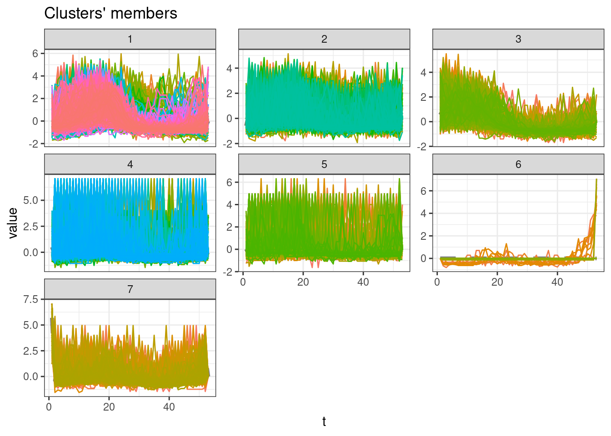
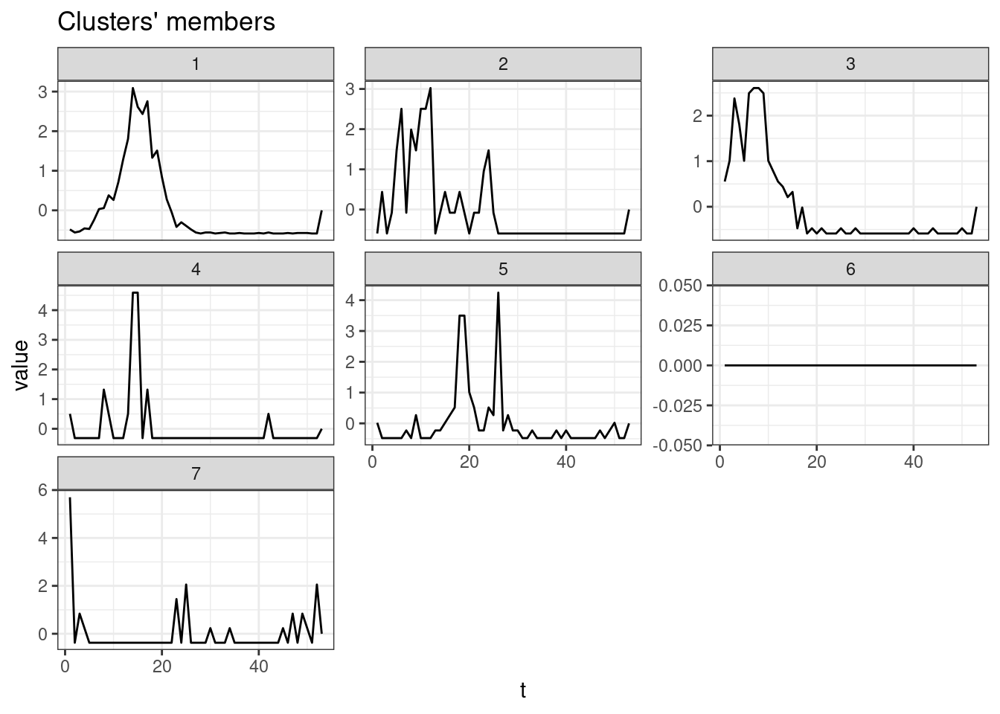

library(tidyverse)
library(lubridate)
library(arrow)
library(timetk)
library(dtwclust)
library(kableExtra)
library(tictoc)Yearly time series
This notebook aims to cluster the Brazilian municipalities considering yearly dengue cases time-series similarities.
Packages
Load data
Load the aggregated data.
dengue <- read_parquet("../dengue-data/parquet_aggregated/dengue_md.parquet")
dim(dengue)[1] 16772737 3Prepare data
The chunk bellow executes various steps to prepare the data for clustering.
tdengue <- dengue %>%
# Filter out dates after 2020-01-01, as this year is not complete
filter(date <= as.Date("2020-01-01")) %>%
# Pad days with zero cases
group_by(mun) %>%
pad_by_time(date, .by = "day", .pad_value = 0, .start_date = min(dengue$date), .end_date = max(dengue$date)) %>%
ungroup() %>%
# Aggregate by week
mutate(
week = str_pad(epiweek(date), pad = 0, width = 2),
year = year(date)
) %>%
group_by(mun, year, week) %>%
summarise(freq = sum(freq, na.rm = TRUE)) %>%
ungroup() %>%
# Keep only municipalities/year series with more than 1,000 cases total
group_by(mun, year) %>%
mutate(total = sum(freq, na.rm = TRUE)) %>%
ungroup() %>%
filter(total >= 100) %>%
select(-total) %>%
# Scale cases by mun and year
group_by(mun, year) %>%
arrange(week) %>%
mutate(freq = scale(freq)) %>%
ungroup() %>%
arrange(mun, year, week) %>%
# Isolate municipality and year
mutate(mun = paste0(mun, "_", year)) %>%
select(-year, week) %>%
# Prepare time series of municipalities by year
mutate(mun = paste0("m_", mun)) %>%
arrange(mun) %>%
pivot_wider(names_from = mun, values_from = freq) %>%
select(-week) %>%
t() %>%
# Convert object
tslist()`summarise()` has grouped output by 'mun', 'year'. You can override using the
`.groups` argument.# Remove missing values created by leap years (week 53)
tdengue <- lapply(tdengue, na.omit)length(tdengue)[1] 6286Clustering
Sequence of k groups to be used.
k_seq <- 3:10SBD method
tic()
clust <- tsclust(
series = tdengue,
type = "partitional",
k = k_seq,
distance = "sbd",
seed = 13
)
toc()11.268 sec elapsedCluster Validity Indices (CVI)
names(clust) <- paste0("k_", k_seq)
res_cvi <- sapply(clust, cvi, type = "internal") %>%
t() %>%
as_tibble(rownames = "k") %>%
arrange(-Sil)
res_cvi %>%
kbl() %>%
kable_styling()| k | Sil | SF | CH | DB | DBstar | D | COP |
|---|---|---|---|---|---|---|---|
| k_3 | 0.1799898 | 0.4600699 | 1615.6227 | 1.808332 | 2.176731 | 0.0107715 | 0.2197241 |
| k_6 | 0.0893704 | 0.2658658 | 636.5185 | 2.950530 | 5.019164 | 0.0102939 | 0.2146694 |
| k_4 | 0.0880023 | 0.3914649 | 880.8181 | 2.742671 | 3.950231 | 0.0088136 | 0.2199024 |
| k_5 | 0.0523091 | 0.3553609 | 874.9466 | 2.905408 | 4.787980 | 0.0118592 | 0.2039666 |
| k_7 | 0.0493956 | 0.2508976 | 644.2339 | 3.110343 | 4.808484 | 0.0084627 | 0.2052782 |
| k_8 | 0.0161030 | 0.2628680 | 451.9170 | 4.862096 | 7.169066 | 0.0070094 | 0.1972874 |
| k_10 | 0.0139549 | 0.2003374 | 469.7019 | 4.056141 | 6.254832 | 0.0092263 | 0.1866359 |
| k_9 | 0.0070017 | 0.1981565 | 445.0204 | 3.658878 | 6.053719 | 0.0095809 | 0.2005665 |
Cluster with higher Silhouette statistic
sel_clust <- clust[[res_cvi[[1,1]]]]plot(sel_clust)
ggsave(filename = "cluster_mun_year.pdf")Saving 7 x 5 in imageplot(sel_clust, type = "centroids", lty = 1)
ggsave(filename = "cluster_mun_year_centr.pdf")Saving 7 x 5 in imageCluster sizes
table(sel_clust@cluster)
1 2 3
1166 3617 1503 Session info
sessionInfo()R version 4.2.0 (2022-04-22)
Platform: aarch64-apple-darwin20 (64-bit)
Running under: macOS 13.4
Matrix products: default
BLAS: /Library/Frameworks/R.framework/Versions/4.2-arm64/Resources/lib/libRblas.0.dylib
LAPACK: /Library/Frameworks/R.framework/Versions/4.2-arm64/Resources/lib/libRlapack.dylib
Random number generation:
RNG: L'Ecuyer-CMRG
Normal: Inversion
Sample: Rejection
locale:
[1] en_US.UTF-8/en_US.UTF-8/en_US.UTF-8/C/en_US.UTF-8/en_US.UTF-8
attached base packages:
[1] stats graphics grDevices utils datasets methods base
other attached packages:
[1] tictoc_1.2 kableExtra_1.3.4 dtwclust_5.5.12 dtw_1.23-1
[5] proxy_0.4-27 timetk_2.8.3 arrow_12.0.1 lubridate_1.9.2
[9] forcats_1.0.0 stringr_1.5.0 dplyr_1.1.2 purrr_1.0.1
[13] readr_2.1.4 tidyr_1.3.0 tibble_3.2.1 ggplot2_3.4.2
[17] tidyverse_2.0.0
loaded via a namespace (and not attached):
[1] colorspace_2.1-0 ellipsis_0.3.2 class_7.3-22
[4] modeltools_0.2-23 clue_0.3-64 rstudioapi_0.14
[7] farver_2.1.1 listenv_0.9.0 furrr_0.3.1
[10] dials_1.2.0 ggrepel_0.9.3 bit64_4.0.5
[13] RSpectra_0.16-1 prodlim_2023.03.31 fansi_1.0.4
[16] xml2_1.3.4 codetools_0.2-19 splines_4.2.0
[19] knitr_1.43 jsonlite_1.8.5 workflows_1.1.3
[22] anytime_0.3.9 cluster_2.1.4 yardstick_1.2.0
[25] shiny_1.7.4 tune_1.1.1 httr_1.4.6
[28] compiler_4.2.0 assertthat_0.2.1 Matrix_1.5-4.1
[31] fastmap_1.1.1 cli_3.6.1 later_1.3.1
[34] htmltools_0.5.5 tools_4.2.0 gtable_0.3.3
[37] glue_1.6.2 reshape2_1.4.4 Rcpp_1.0.10
[40] DiceDesign_1.9 vctrs_0.6.3 svglite_2.1.1
[43] iterators_1.0.14 parsnip_1.1.0 timeDate_4022.108
[46] gower_1.0.1 xfun_0.39 globals_0.16.2
[49] rvest_1.0.3 timechange_0.2.0 mime_0.12
[52] lifecycle_1.0.3 future_1.32.0 MASS_7.3-60
[55] zoo_1.8-12 scales_1.2.1 ipred_0.9-14
[58] ragg_1.2.5 hms_1.1.3 promises_1.2.0.1
[61] parallel_4.2.0 yaml_2.3.7 padr_0.6.2
[64] rpart_4.1.19 stringi_1.7.12 highr_0.10
[67] foreach_1.5.2 lhs_1.1.6 hardhat_1.3.0
[70] lava_1.7.2.1 systemfonts_1.0.4 rlang_1.1.1
[73] pkgconfig_2.0.3 rsample_1.1.1 evaluate_0.21
[76] lattice_0.21-8 labeling_0.4.2 recipes_1.0.6
[79] htmlwidgets_1.6.2 bit_4.0.5 tidyselect_1.2.0
[82] parallelly_1.36.0 plyr_1.8.8 magrittr_2.0.3
[85] R6_2.5.1 generics_0.1.3 pillar_1.9.0
[88] withr_2.5.0 xts_0.13.1 survival_3.5-5
[91] nnet_7.3-19 future.apply_1.11.0 utf8_1.2.3
[94] tzdb_0.4.0 rmarkdown_2.22 grid_4.2.0
[97] flexclust_1.4-1 data.table_1.14.8 webshot_0.5.4
[100] digest_0.6.31 xtable_1.8-4 httpuv_1.6.11
[103] textshaping_0.3.6 RcppParallel_5.1.7 stats4_4.2.0
[106] GPfit_1.0-8 munsell_0.5.0 viridisLite_0.4.2
[109] shinyjs_2.1.0